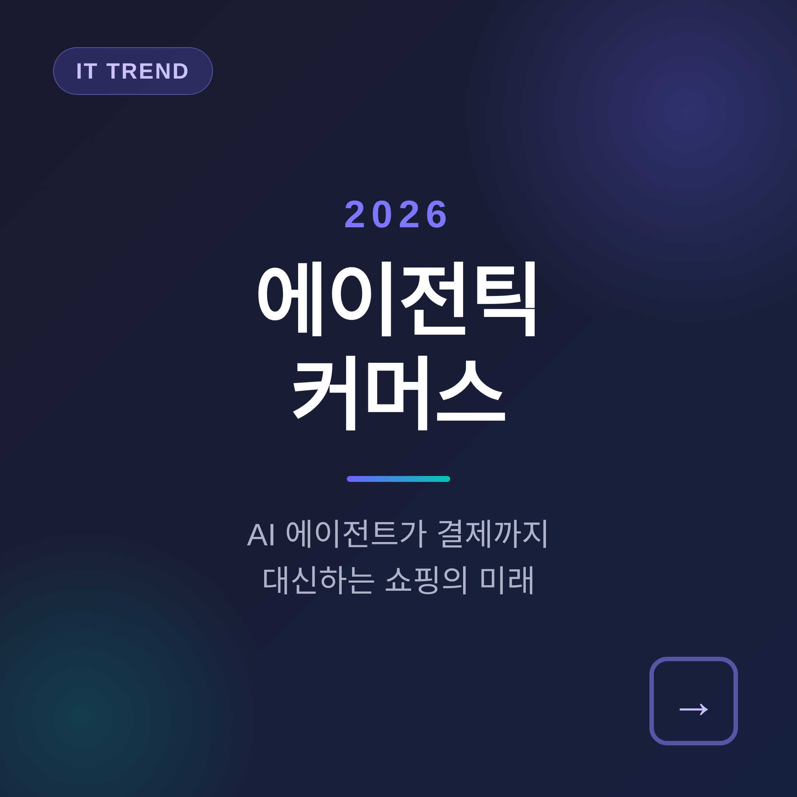
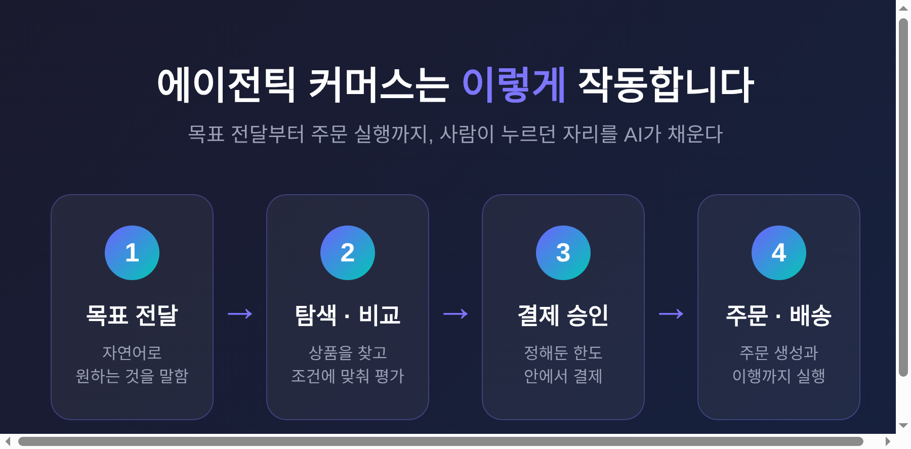
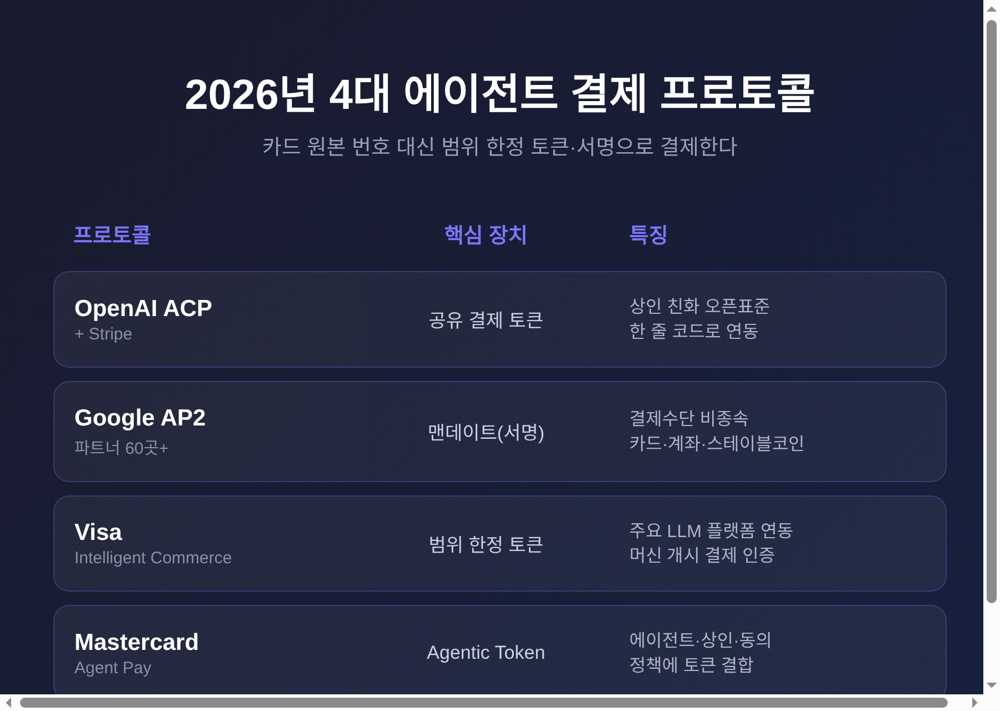
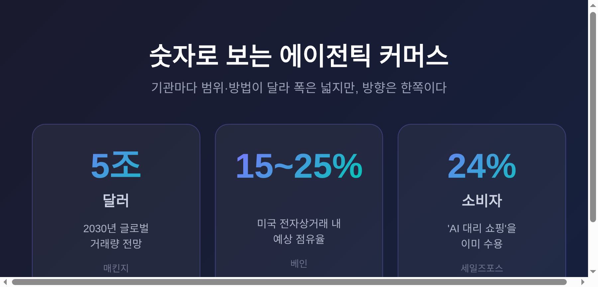

이번 글에서는 'AI 에이전트가 결제까지 대신하는 쇼핑', 즉 에이전틱 커머스를 정리해 보겠습니다.
핵심부터 말씀드립니다. 2026년의 쇼핑은 사람이 결제 버튼을 누르는 일에서, AI가 한도 안에서 대신 누르는 일로 옮겨가고 있습니다. 이미 ChatGPT는 채팅 안에서 바로 결제하는 기능을 2025년 9월부터 가동했습니다. 비자와 마스터카드, 구글까지 결제망을 새로 깔고 있습니다.
에이전틱 커머스는 구매자가 사람이 아니라, 위임받은 권한을 가진 AI 에이전트인 거래를 말합니다.
방식은 이렇습니다. 에이전트가 자연어로 목표를 받습니다. 필요한 단계를 계획하고, 판매자에게 묻고, 조건에 맞춰 상품을 고릅니다. 그리고 사전에 정한 한도 안에서 결제를 승인하고, 배송까지 걸어둡니다.
추천 엔진이나 챗봇과는 결이 다릅니다. 저들은 권하기만 합니다. 에이전트는 실제로 돈을 움직이고 주문을 만듭니다.
쉽게 말해, 검색창을 열고 상품을 고르고 결제 버튼을 누르던 자리를 AI가 대신 채우는 셈입니다.

흥미로운 점은 변화의 무게중심입니다.
예전엔 쇼핑몰이 주인공이었습니다. 지금은 결제망과 AI 플랫폼이 판을 새로 깝니다.
OpenAI와 스트라이프는 ACP(에이전틱 커머스 프로토콜)라는 오픈 표준을 함께 만들었습니다. 여기서 핵심은 '공유 결제 토큰'입니다. ChatGPT가 사용자의 카드 정보를 직접 보지 않고도 결제를 개시하게 해주는 장치입니다. 이 토큰은 특정 상인과 특정 장바구니 금액으로만 범위가 묶입니다.
구글은 AP2라는 결제 프로토콜을 60곳 넘는 파트너와 함께 내놓았습니다. 사용자의 의도와 허가를 암호로 서명한 '맨데이트'가 핵심입니다. 누가 허락했는지, 요청이 진짜 의도와 맞는지, 문제가 생기면 누가 책임지는지를 풀려는 설계입니다.
비자는 '인텔리전트 커머스'로 에이전트 전용 토큰을 발급합니다. 마스터카드는 '에이전트 페이'로 카드 원본 번호 없이 거래하게 했습니다. 2025년 9월, 실제 AI 에이전트가 토큰으로 상품을 사는 첫 거래가 이미 성사됐습니다.

수치는 기관마다 다릅니다.
매킨지는 2030년 글로벌 거래량을 약 5조 달러로 봅니다. 베인은 미국 시장만 3,000억~5,000억 달러, 전체 전자상거래의 15~25%로 추정합니다. 모건스탠리는 미국 기준 1,900억~3,850억 달러를 제시합니다.
범위와 방법이 달라 직접 비교는 어렵습니다. 다만 방향은 한쪽을 가리킵니다. 세일즈포스 조사에서 소비자 24%는 이미 AI가 대신 쇼핑하는 것을 편안해합니다.

국내도 조용히 움직이고 있습니다.
네이버는 자체 AI 쇼핑 에이전트를 멤버십 혜택, N배송, 선물하기와 묶고 있습니다. 단순 추천을 넘어 장바구니 구성과 최적 할인·적립 조합까지 AI가 다루는 방향입니다. 아마존과 네이버는 외부 AI 크롤러를 막고, 자체 에이전트로 고도화하는 길을 택했습니다.
다만 소비자의 마음은 신중합니다. 크리테오 리포트에 따르면 한국 소비자 57%는 AI에 결제 정보를 넘기는 데 조심스럽습니다. 편리함과 불안이 함께 자라는 셈입니다.
좋은 점만 있지는 않습니다.
가장 자주 거론되는 위험은 '의도 표류'입니다. 거래가 사용자의 진짜 의도를 반영한다는 연결이 느슨해지는 문제입니다. 조직의 24%만 AI 에이전트를 제대로 들여다보고 있다는 조사도 있습니다.
가짜 상인도 골칫거리입니다. 시세보다 싼 값을 내걸어 에이전트를 속이고 결제 데이터를 빼가는 수법입니다. 사람이라면 의심했을 거래를, 최적가만 좇는 에이전트는 통과시킬 수 있습니다.
아직 완벽하지는 않습니다. 사람을 전제로 만든 규제가 이 변화를 따라잡지 못한다는 지적도 나옵니다.
정리하면 이렇습니다.
결제까지 대신하는 AI는 더 이상 먼 이야기가 아닙니다. 토큰과 서명으로 카드 번호를 감추는 안전장치는 빠르게 자리 잡고 있습니다. 남은 숙제는 기술이 아니라 신뢰입니다.
AI에게 지갑을 맡기겠냐고 물으신다면, 저는 아직 한 발만 들여놓겠다고 답하겠습니다.